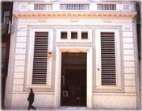
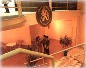

|

|
Abans de
1874, als terrenys que ara ocupa el Centre Cívic, hi havia
una fàbrica de teixits. El 1877 l'antiga fàbrica passa
a utilitzar-se com a cotxeres i taller de petites reparacions del Tramvia
de Foc. El naixement dels troleibusos va convertir les Cotxeres
de Sant Andreu en estació transformadora, funció que acomplí
fins el 1960 aproximadament. |

|
Centre Cívic Sant Andreu :: Carrer Gran, 111 · 933 119 953 · fax 933 117 072 · Sant Andreu de Palomar (08030 Barcelona)
|
|
tornar